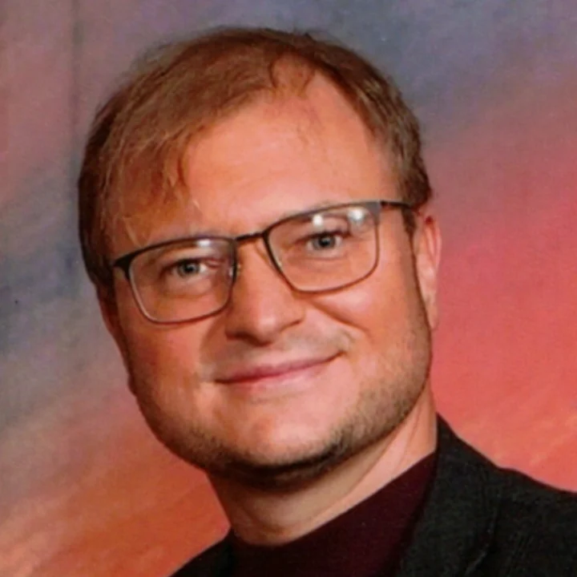

Prof. Aleksandr “Alex” Krasnok
Assistant Professor, Electrical & Computer Engineering
Research in complex-frequency electrodynamics, quantum control, photonics, sensing, and quantum-hardware diagnostics. Co-founder of the FIU Quantum Initiative and a core member of FIU’s university-wide quantum committee.